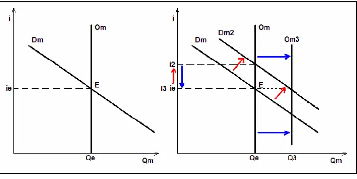
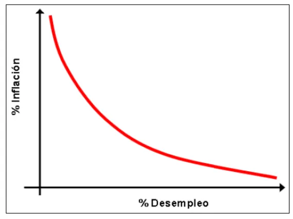

2° parcial
Macroeconomía: cómo se mide lo que produce un país y cómo se relacionan el consumo, la inversión, el dinero, la inflación y el comercio con el exterior.
Resumen no juzgado. Todavía nadie evaluó si alcanza para estudiar solo con esto.
Cómo viene el examen
Es un formulario de Google con opciones. Revisé tres, de 2023 en adelante. Los del 14/11/2024 y el 07/11/2025 traen las mismas 20 consignas, con cambios menores de redacción. El del 06/10/2023 también trae 20 y comparte 12 con ellos. Otras dos cambian de forma, sobre la curva de Philips y la política monetaria. Las seis restantes son propias, varias de verdadero o falso.
Varias consignas parten de una noticia, como la nafta y los brasileños o la inflación en Cuba. Te piden aplicar la teoría a ese caso. Practicalas en Ejercicios.
Las citas dicen «compilado, pág. N» cuando salen del apunte de la cátedra. Dicen «libro, pág. N» cuando salen de los capítulos de Macroeconomía de Dornbusch y Fischer, escaneados al final de ese archivo. El libro escribe PIB y los exámenes, PBI. Es lo mismo.
Cómo se mide la producción
El PBI es el valor de todos los bienes y servicios finales producidos por un país en un período. (Libro, pág. 31.)
- Cuenta bienes finales. El trigo que se usa para el pan no se suma aparte, así no se cuenta dos veces. (Libro, pág. 32.)
- Cuenta la producción corriente. La venta de una casa ya construida no entra. (Libro, pág. 32.)
- Se valora a precios de mercado. (Libro, págs. 32 y 33.)
| Medida | Qué mide | Fuente |
|---|---|---|
| PNB | Lo producido por factores de propiedad nacional, en el país o afuera | Libro, pág. 33 |
| PIN | El PBI menos el consumo de capital fijo, que indica la depreciación | Libro, pág. 34 |
| PBI nominal | La producción a los precios de ese período | Libro, pág. 34 |
| PBI real | La producción de distintos años a los mismos precios | Libro, pág. 35 |
El PBI nominal puede subir porque sube la producción o porque suben los precios. Por eso se compara la producción entre años con el real. En el ejemplo del libro, el nominal aumenta 50% y el real, 23%. (Libro, págs. 34 y 35.)
El PBI es un indicador imperfecto. Hay cosas que no pasan por el mercado, como los servicios públicos o el trabajo voluntario. Es difícil medir las mejoras de calidad. Tampoco registra la contaminación ni la economía sumergida. (Libro, págs. 36 a 38.)
El desgaste del capital productivo queda expuesto ante el cálculo de...2° parcial, 07/11/2025
PIN. El capital se desgasta al usarse, y el PIN es el PBI menos el consumo de capital fijo. Fuente: compilado, capítulo escaneado, libro pág. 34.
Lo producido exclusivamente por el capital nacional queda expuesto ante el cálculo de...2° parcial, 06/10/2023
PNB. Es el valor de lo producido por factores de propiedad nacional, durante un período. Fuente: compilado, capítulo escaneado, libro pág. 33.
Demanda agregada y producción de equilibrio
La demanda agregada es la cantidad total de bienes que se demandan en la economía. Suma lo que piden las familias, las empresas, el Estado y el resto del mundo. (Libro, pág. 62, y compilado, pág. 65.)
XN son las exportaciones netas, es decir, exportaciones menos importaciones.
La producción está en equilibrio cuando lo producido es igual a lo demandado. Si se produce de más, los almacenes se llenan y las empresas reducen la producción. Si se produce de menos, se quedan sin existencias y la aumentan. (Libro, págs. 62 a 65.)
No encontré esta respuesta escrita en el apunte. Repasá qué hace mover a cada componente en las secciones de consumo, inversión e inflación.
Superávit presupuestario
El Estado tiene superávit si lo que recauda supera lo que gasta. El gasto suma las compras y las transferencias . (Libro, págs. 84 y 85.)
Razonalo con la fórmula de arriba.
Consumo e inversión
La función de consumo de Keynes
Las familias con más renta consumen más. La relación es esta. (Libro, pág. 66.)
- es el consumo cuando la renta es cero.
- es la propensión marginal a consumir. Indica cuánto aumenta el consumo por cada unidad extra de renta. Si es 0,90, el consumo sube 90 centavos por cada dólar extra.
Lo que no se consume se ahorra. (Libro, págs. 66 y 67.)
es la propensión marginal a ahorrar. Con de 0,9, se ahorran 10 centavos de cada dólar extra.
No encontré esta frase en el apunte. Preguntá cómo la presenta la cátedra.
La acción dicotómica del consumidor (consumir o ahorrar) con una nueva unidad de renta obtenida queda en evidencia, según Keynes, por...2° parcial, 07/11/2025
El valor de la propensión marginal a consumir. Marca qué parte de cada aumento de renta se consume, y el resto se ahorra. Fuente: compilado, capítulo escaneado, libro págs. 66 y 67.
Otras teorías del consumo
- Gabriel Tarde. La conducta económica resulta de dos causas psicológicas, el deseo y la creencia. El precio mide la intensidad del deseo, y la demanda refleja la fuerza de las creencias, que son mitos de cada época. La función es . El apunte la llama causación de la conducta económica, y las preguntas de teoría del Drive, «causación dual». (Compilado, págs. 72 y 73.)
- Tversky y Kahneman. Los individuos valoran más las pérdidas que las ganancias. Lo viste en el 1° parcial. (Compilado, págs. 17 y 18.)
De las teorías estudiadas sobre consumo, cuál es la que se basa en cuestiones conductuales derivadas de la aversión a las pérdidas?2° parcial, 06/10/2023
La de Kahneman, formulada con Tversky. El gráfico del apunte la resume «por aversión a la pérdida». Fuente: compilado, pág. 17.
Sin apunte de la cátedra
La teoría del ciclo vital de Modigliani y Ando se pide en el final y no está en el compilado. Hay una explicación con gráfico en el resumen de un alumno, pág. 34. Confirmala en tu comisión.
La inversión según Keynes
Las empresas invierten según la tasa de interés. Si sube la tasa, el empresario prefiere poner su dinero a rendir en el sistema financiero. Eso desalienta la inversión y hace caer la producción. Cuánto reacciona depende de su propensión a la inversión, el de la fórmula. (Compilado, pág. 60.)
Sale de apuntes de alumnos
La fórmula completa aparece en el resumen de un alumno, pág. 35. El compilado confirma el papel de y de la tasa.
Resumen de un alumno
Según la teoría Keynesiana de inversión, la cantidad de inversión a realizar por empresarios tiene una relación inversa con...2° parcial, 07/11/2025
La tasa de interés. Una modificación que eleva la tasa desalienta la inversión. Fuente: compilado, pág. 60.
Balanza de pagos
La balanza de pagos (BP) registra las transacciones económicas de un país con el resto del mundo durante un período. El apunte da dos visiones. (Compilado, págs. 46 y 47.)
Visión documental o contable
| Cuenta | Partes |
|---|---|
| Cuenta corriente | Balanza comercial (importaciones y exportaciones de mercaderías). Balanza de servicios (transportes, seguros, viajes, inversiones). Balanza de transferencias |
| Cuenta de capital | Capital a largo plazo. Capital a corto plazo. Variación de reservas |
| Errores y omisiones | Ajustes contables |
(Compilado, págs. 47 y 48.)
Viajes es el ingreso por turistas que entran menos el gasto de los nacionales que salen. Las reservas son las divisas y otros activos del país, y permiten equilibrar las otras dos cuentas. (Compilado, pág. 48.)
Visión operativa
Imaginá una balanza de dos platos. Si las variables de una cuenta crecen y las de la otra no, se desequilibra. (Compilado, pág. 49.)
- Las exportaciones netas dependen del ingreso nacional , del extranjero y del tipo de cambio real .
- El capital financiero depende de la diferencia entre la tasa nacional y la extranjera .
Un déficit de cuenta corriente se financia vendiendo activos o pidiendo créditos. Es decir, con un ingreso por cuenta de capital. (Compilado, pág. 49, y libro, pág. 168.)
En criollo
Pensá en la cuenta de tu casa. Si este mes gastaste más de lo que entró, lo cubrís vendiendo algo o pidiendo prestado. Con un país pasa lo mismo.
La BP no siempre da cero. Si las dos cuentas muestran déficit, el Banco Central pierde reservas. (Compilado, pág. 49, y libro, pág. 169.)
Ubicá la operación en la tabla de cuentas y razoná con ceteris paribus. No hay una solución de la cátedra en el Drive. La misma hoja pregunta para qué debe estar equilibrada la balanza. El apunte no lo responde en forma directa.
Sistema financiero y tipo de cambio
El sistema financiero intermedia entre quienes tienen ahorros (unidades prestamistas) y quienes necesitan financiación (unidades prestatarias). Lo forman el Gobierno, el Banco Central, los intermediarios financieros, los prestamistas y los prestatarios. (Compilado, pág. 50.)
| Banco Central | Qué hace |
|---|---|
| Funciones monetarias | Crea y pone en circulación el dinero legal. Regula la creación de dinero bancario. Instrumenta la política monetaria |
| Funciones no monetarias | Es banco del Estado y banco de bancos. Custodia reservas. Mantiene parte de los encajes |
| Otras | Emite títulos de deuda. Fija o regula la cotización de la moneda |
(Compilado, págs. 50 y 51.)
Los intermediarios financieros son bancarios o no bancarios. Los segundos no pueden crear dinero bancario y también están bajo la tutela del Banco Central. Son, por ejemplo, las compañías de seguro y los fondos de inversión. (Compilado, pág. 51.)
Tipos de cambio
| Sistema | Qué hace el Banco Central | ¿Necesita reservas? | Si la moneda baja de valor |
|---|---|---|---|
| Fijo | Compra o vende a un precio fijado. Eso es la intervención | Sí | Devaluación (al revés, reevaluación) |
| Fluctuante, flotación limpia | Se mantiene al margen. Decide el mercado | Transacciones oficiales nulas | Depreciación (al revés, apreciación) |
| Fluctuante, flotación sucia o dirigida | Fija límites máximos o mínimos | Sí | Depreciación |
(Compilado, págs. 52 a 54, y libro, págs. 170, 173 y 174.)
Si un banco central con cambio fijo se queda sin reservas, no puede seguir interviniendo. (Libro, pág. 170.)
La opción de la consigna de reservas cambió entre 2024 y 2025: leela bien. Para la primera, usá la tabla de arriba. La crisis de 2001 no está en el compilado.
Tipo de cambio real
Permite comparar precios entre dos países, y por eso muestra la competitividad. Se calcula con los precios extranjeros, los nacionales y el tipo de cambio. (Compilado, pág. 54.)
El apunte se contradice en este punto
La misma página del compilado dice que una disminución del TCR encarece los precios extranjeros. Eso no coincide con su fórmula. El libro dice que un aumento del tipo de cambio real, una depreciación, mejora la balanza comercial (libro, págs. 179 y 180). Preguntá en tu comisión cómo lo pide la cátedra.
Las opciones hablan de apreciar o depreciar el peso. Estudiá la diferencia en la tabla de tipos de cambio y en el aviso de arriba.
Dinero
El dinero nació para superar el trueque, que necesita una doble coincidencia de deseo. Pasó por objetos sin valor interno y metales preciosos, hasta la moneda actual, sin valor interno y basada en el poder adquisitivo. (Compilado, págs. 55 y 56.)
Tiene cuatro funciones. Es medio de pago, depósito de valor, unidad de cuenta y patrón de pago diferido. (Compilado, pág. 57.)
Demanda y oferta de dinero
La demanda de dinero (Dm) responde a tres motivos, según Keynes. (Compilado, págs. 57 y 58.)
- Transacciones. Usar el dinero para realizar pagos regulares.
- Precaución. Hacer frente a situaciones imprevistas.
- Especulación. Cuando hay incertidumbre sobre la evolución del valor monetario de otros activos.
La Demanda de Dinero es de saldos reales porque...2° parcial, 14/11/2024
La gente demanda dinero por su valor real. Las personas tienen dinero por el poder adquisitivo que da, y no por acumular sumas nominales. Fuente: compilado, pág. 58.
En criollo
Nadie quiere billetes por los billetes. Te importa cuánto súper pagás con ellos. Si los precios se duplican, vas a querer tener el doble de plata para comprar lo mismo.
La oferta de dinero (Om) es la cantidad nominal de billetes y monedas que el Banco Central decide generar, junto con el dinero bancario que permite. Se llama base monetaria. La desagrega así. (Compilado, pág. 58.)
| Agregado | Incluye |
|---|---|
| Efectivo | Dinero que no rinde intereses |
| M1 | Activos que se usan directo para pagar, como cajas de ahorro y cuentas corrientes |
| M2 | M1 y activos no inmediatamente líquidos, como depósitos a plazo |
| M3 | M2 y grandes depósitos negociables y compromisos de recompra |
Como la fija el Banco Central, la Om se dibuja como una recta perpendicular. Un corrimiento de la Dm presiona sobre la tasa de interés. El Banco Central puede actuar sobre la tasa o sobre la Om. (Compilado, pág. 59.)

Cómo actúa el Banco Central
El mecanismo de transmisión monetaria tiene tres pasos (compilado, págs. 59 y 60).
- El Banco Central anuncia una meta para la tasa de interés.
- Compra o vende valores, y eso cambia las reservas. Si vende, las reservas bajan y los bancos suben la tasa.
- Los mercados reaccionan con cambios en la inversión, los créditos y la demanda agregada.
En el corto plazo, subir la tasa desalienta la inversión y baja la producción. En el largo plazo, la política monetaria afecta sobre todo a los precios. Una tasa baja sostenida lleva al producto a su nivel potencial y genera presiones inflacionarias. (Compilado, págs. 60 y 61.)
Encaje bancario
El compilado solo dice que el Banco Central mantiene parte de los encajes de los intermediarios financieros (pág. 51). Dos soluciones de la cátedra muestran cómo opera. Subir el encaje funciona como política restrictiva. La oferta monetaria se corre a la izquierda y la tasa se encarece. Bajarlo aumenta la oferta monetaria y baja la tasa. Fuente: finales 07/08/2015 y 12/02/2016, soluciones, en Ejercicios.
«El denominado encaje bancario permite...», «la existencia de dinero bancario genera...», «Una política "monetariamente expansiva" implica...» (en 2023, «recesiva»), «La tasa de interés impuesta por el BCRA no puede tener un efecto dual...» (verdadero o falso de 2023), «las entidades financieras controladas por el BCRA pueden ser...» y «La acción gubernamental para evitar erogaciones en bienestar social mayores en el futuro es...». El Drive no tiene una respuesta de la cátedra para estas formulaciones.
Inflación
La inflación es un alza en el nivel general de precios. Baja el valor real del dinero, y si tu renta no cambia sos más pobre. Se mide con índices como el IPC y el IPM. (Compilado, pág. 63.)
Si da negativo, hay deflación. Según el resultado, el apunte da esta escala, que varía entre autores (compilado, págs. 64 y 65).
| Tasa | Nombre | Qué hace la gente |
|---|---|---|
| Menor a dos dígitos | Moderada | Sigue confiando y firma contratos a mediano y largo plazo |
| Entre dos y tres dígitos | Alta o galopante | Compra bienes o divisas. Contratos cortos e indexados |
| Más de tres dígitos | Hiperinflación | Se desprende del dinero líquido antes de que pierda más valor |
Tipos de inflación
- De demanda. La demanda agregada crece y la producción no puede seguirla por problemas estructurales. La causa monetaria es un aumento del dinero que tienen los agentes. Para reducirla, se retira dinero, por ejemplo subiendo la tasa. (Compilado, págs. 66 y 67.)
- Tendencial. Al llegar al nivel potencial de la oferta, los precios suben con la producción constante. También aparece al incorporar en contratos la inflación esperada. (Compilado, págs. 66 y 72.)
- De costos. Una perturbación de la oferta agregada altera el costo de producir. Su motor principal son los salarios. (Compilado, págs. 67 y 68.)
La estanflación es inflación elevada con desempleo elevado. (Compilado, pág. 68.)
Curva de Phillips
Refleja la relación entre el desempleo y la inflación. Sugiere que es imposible tener a la vez un alto nivel de empleo y una baja inflación. Cada gobierno debe decidir una combinación. (Compilado, pág. 70.)

Las opciones combinan inflación o deflación con crecimiento o decrecimiento. Razonalo con la relación de arriba. En 2023 fue un verdadero o falso sobre aceptar más desempleo para bajar la inflación.
Por qué importa
Esta sección apoya la consigna «la inflación genera...», de los parciales de 2024 y 2025.
La inflación distorsiona los precios relativos, redistribuye renta y riqueza, y hace perder competitividad a las exportaciones. La indexación busca compensar esas pérdidas, y los gobiernos procuran impedirla por ley. (Compilado, págs. 71 y 72.)
Teoría cuantitativa de los precios
El monetarismo sostiene que la oferta de dinero es el determinante primario. Introduce la velocidad del dinero, que mide cuántas veces por año se gasta una unidad monetaria. (Compilado, págs. 61 y 62.)
Según esta teoría, los precios son proporcionales a la Om. Los monetaristas creen que una oferta que crece a una tasa fija estabiliza la economía. (Compilado, pág. 62.)
«La observación de Adam Smith que fundamenta la teoría cuantitativa implica...», «La inestabilidad política en un país en crisis recurrentes impacta monetariamente en...» y la noticia de la inflación en Cuba. En 2023 hubo también un verdadero o falso sobre la «velocidad monetaria». El compilado presenta la teoría desde el monetarismo y no cuenta la observación de Smith. Preguntá cómo la presenta la cátedra.
Quiz del 2° parcial
Elegí una opción para ver la explicación. Las que dicen «Se tomó» salieron de exámenes reales.
- 1
¿Por qué el PBI cuenta solo bienes y servicios finales?
Las piezas o el trigo ya están incluidos en el precio del bien final.
- 2
La medida que descuenta la depreciación del capital es...
Se tomó: 2° parcial 07/11/2025, adaptada
El PIN es el PBI menos el consumo de capital fijo.
- 3
Para comparar la producción física entre años conviene usar...
El real valora los bienes de distintos años a los mismos precios.
- 4
Si la propensión marginal a consumir es 0,9, por cada dólar extra de renta...
El mismo ejemplo aparece en el libro. La propensión a ahorrar es .
- 5
La teoría de consumo que se apoya en la aversión a las pérdidas es la de...
Se tomó: 2° parcial 06/10/2023, adaptada
Los individuos les dan más valor a las pérdidas que a las ganancias.
- 6
Una suba de la tasa de interés, en el corto plazo...
Se tomó: 2° parcial 07/11/2025, adaptada
El empresario prefiere poner sus fondos a lucrar en el sistema financiero.
- 7
¿Dónde se registran los ingresos por turistas extranjeros?
Viajes es parte de la balanza de servicios.
- 8
Un déficit por cuenta corriente se financia...
Requiere un ingreso en la cuenta de capital.
- 9
En un tipo de cambio con flotación limpia, el Banco Central...
Las transacciones oficiales de reservas son nulas.
- 10
La demanda de dinero es de saldos reales porque...
Se tomó: 2° parcial 14/11/2024, adaptada
Se tiene dinero por el poder adquisitivo que da, y no por tener sumas nominales abultadas.
- 11
La inflación con presión salarial como principal motor es...
La producen perturbaciones de la oferta agregada, en especial el nivel de los salarios.
- 12
Según la teoría cuantitativa, los precios son proporcionales a...
De ahí sale .
Todavía no respondiste ninguna.